Nous étions obligés d'en parler... Dès le deuxième jour de l'année, nous nous sommes tous retrouvés au Don Camillo. Et juste après avoir fini de manger nous sommes allés boire quelques verres à la Brass. Les bars sont des endroits incontournables pour tout taupin qui se respecte. Tout au long de l'année il s'est passé une quantité incroyable de choses en ces lieux. Que ce soit la Brasserie, le Shannon, le Mexicanos, la Datcha, le St Andrews, le Twickenam etc... et j'en passe, ces soirées ont été des moments de pur bonheur à chaque fois. Il fallait donc absolument qu'on vous montre quelques photos de tout ça, pour mesurer toute la bonne ambiance qu'il y a en Sup3, si tant est qu'il est possible d'en évaluer le niveau, car il faut vivre tous ces moments pour comprendre. Régalez vous !
Si vous avez des photos à nous proposer, dites le nous, on les mettra !
| 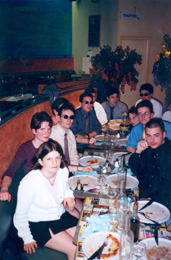 |
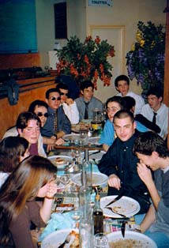 |
| Un des repas de classe que l'on a fait à la Marina. Ce soir là nous avions décidé de tous bien s'habiller : cravate pour les gars et tenue de soirée pour les filles ! A part quelques personnes... Comme Malawi et Morpheus qui portait leur blouse de chimie avec une belle cravate bien voyante ! | |
| 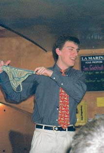 | Thibaut a osé dire un jour que si on lui offrait un string, il le mettrait. La Sup3 s'est cotisé et l'a fait ! Alors Thibaut, ça se met dans quel sens tu te rappelles ? |
| 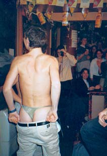 |
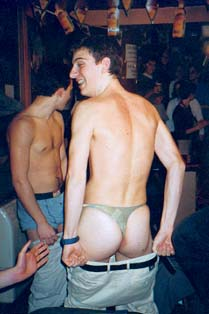 |
| Thibaut quelques minutes plus tard, au Shannon... On dirait qu'il avait envie de montrer son joli string ! On peut voir Pedro qui se laisse aller également. Oh que c'était chaud ce soir là ! N.B. : Les webmasters regrettent pour la copine de Thibaut (bonjour Clémentine !) que ces photos compromettantes soient publiées mais sous la torture nous avons cédé et avons été obligés de les mettre... | |
| 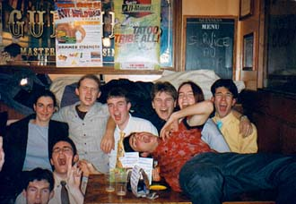 | Cette même soirée costard, mais un peu plus tard, au Shannon. On peut voir l'ambiance de folie qu'il y avait ce soir là ! |
| Encore à la Marina mais en moins bien habillé... Ludo, Elodie et Thibaut. Vous voulez savoir quelque chose les filles ? Mais ne le répandez pas trop attention ! Thibaut adore les strings ! La Sup3 lui en a offert un car il avait dit que si il en avait un il le mettrait. Et il l'a fait ! |
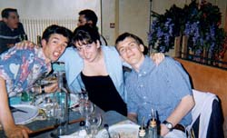 |
| 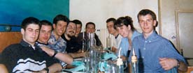 | Damien, Mickaël, Ludo, Stéphane, Emilien, Bertrand, Patou, Elodie et string-man. |
| Qui a dit que les Sup3 n'étaient pas des lumières ? Désolé il fallait que je la fasse... | 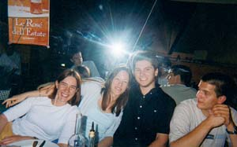 |
| 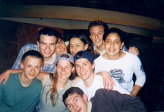 | Une petite photo de groupe à la Marina : Pépé, Scoubi, Emilie, Alban, Krophète, PBO, Anissa, Pedro et Jihane ! |
| PTSK, Aude et Alain. Ben Alain, pas content d'être là ? | 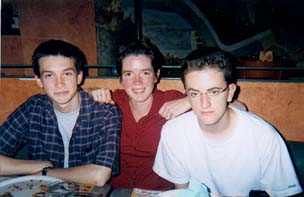 |
| 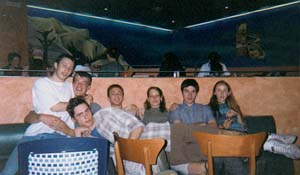 |
PBO a trouvé une place bien confortable là je
crois. Simon veut transcender sa relation avec Anthony et ce dernier est tout
content d'avoir Simon sur ces genoux. Ils sont pas mimis tous les deux ? Pedro,
Elise, Dublack et Manue ont l'air normaux sur cette photo... |
| Là on est au Mexicanos. De gauche à droite : Pépé, Elise, Dublack, Simon, Jihane et une girafe de despé ! Ils ont pas l'air trop malheureux, non ? Qu'est-ce que vous en pensez ? |
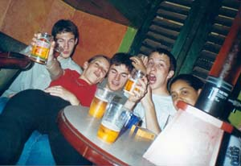 |
| 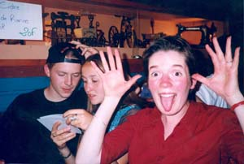 |
Aude elle est bourrée, Aude elle est bourré ! Aude Aude Aude elle est bourrée ! Nous avons Sylvain, qui a intégré les Mines d'Alès, Manue qui a intégré la fac et Aude, qui a intégré Sciences Po Rennes. Ne vous inquiétez pas pour cette dernière elle est dans son état normal là... Il parait qu'elle nous a même dit un jour que son vide était verre, mais curieusement, personne ne s'en souvient ! |
| Bon
alors pour lui on ne peut plus rien faire... |
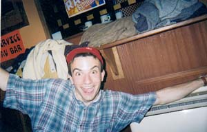 |
| 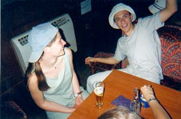 |
Emilie et Pedro au Shannon. On sait pas trop ce que fait Pedro
mais ça fait marrer Emilie en tout cas, c'est l'essentiel ! |
| Toujours au Shannon bien sûr.
Mia, Patou, Dublack, Elise au fond. Anthony et Simon au premier plan et Emilien
qui se cache et les esprits mal placés diront qu'il est en train de biiiiiiiip.
Mais c'est vrai que Simon a l'air content quand même ! |
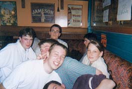 |
| 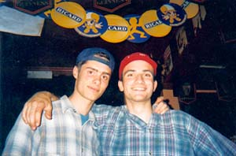 | Un tandem de choc : PBO 2001 et Krophète ! Ils sont pas beaux là ? |
| Maintenant quelques photos du repas de classe entre HX3 208 et HX3 209 du début d'année. Pour ceux qui ne le savent pas, la tradition veut que les étudiants de 2è année fassent un repas en commun avec ceux de 1ère année dans les tous premiers jours de l'année. Comme ça, ça leur permet de se connaître entre eux, faire connaissance avec nous, nous poser des questions sur la prépa, admirer l'ambiance qui y règne et effacer de leur mémoire tous les préjugés qu'ils avaient avant de venir en maths sup. Souvenirs du lundi 10 septembre 2001... | |
| 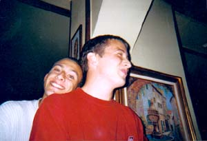 |
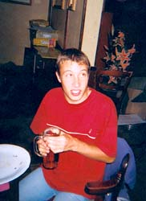 |
| 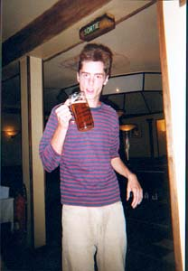 |
En haut on retrouve Simon et son beau tee-shirt rouge : "Il y a deux sortes d'amitié..." Cette phrase de Monsieur Simon est désormais mythique. En haut à gauche on peut voir les belles dents de Pedro derrière Simon... A gauche, PBO qui nous montre sa bière. En espérant pour lui que ce n'est pas de la Kro bien sûr...
|
| Bon le gros doigt doit être celui de Simon, vu que c'est lui qui m'a donné cette photo... Enfin ça ne nous empêche pas de voir Hervé, futur DO, PTSK et Whiteman autour de bonnes tartes flambées, le tout arrosé avec un doigt de bière... | 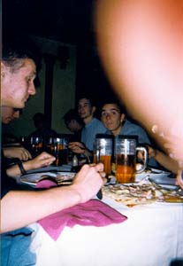 |
| 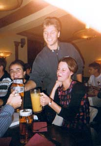 | Elise, Pascal et Dublack (le gars à la chemise bleu, plus connu sous le nom de Dieu) trinquent avec Marion, toute nouvelle Supette 3 pas encore convertie aux coutumes locales visiblement, puisqu'elle tient dans sa main un verre rempli d'un affreux liquide jaune. |